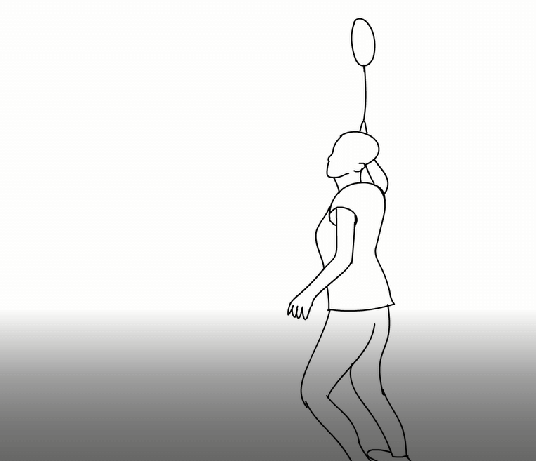

Digital Manipulation

We used photoshop to an image inspired by Julian Opie and another inspired by Beth Hoeckel.
Find Out MoreAnimation
Using Adobe Animate, I was able to create an animation using a method called 'rotoscoping'.
Find Out More